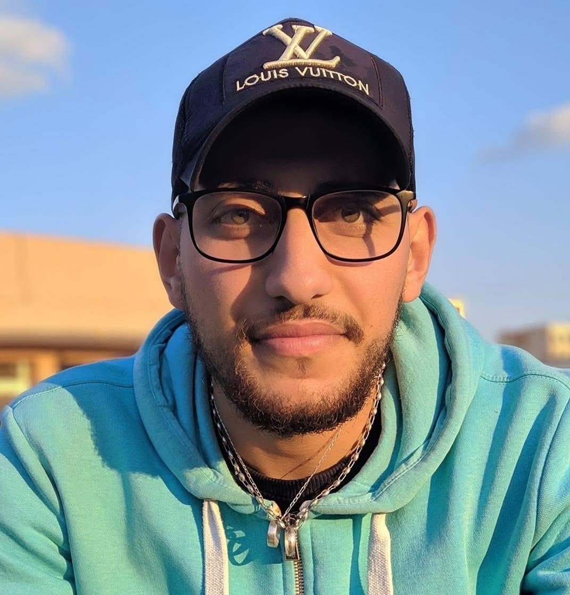

About Me
I am a student in the Algonquin program IMD. I started this program on January 12. I enjoy working with computers, designing websites, and learning how interactive experiences are created. I chose this program to build skills in interactive design and web media. I am motivated to learn, improve daily, and grow academically and professionally through creativity, collaboration, and hands-on projects.
Outside of school, I enjoy learning new skills, solving problems, and staying organized with my goals. I also like watching sports entertainment such as boxing, MMA, and soccer. I believe consistency and discipline are important for success in digital media, and I aim to improve my creativity and technical skills through real projects and hands-on experience.
Hobbies
- Photography
- Playing Soccer
- Hiking
- Travel
- Swimming
- Boxing